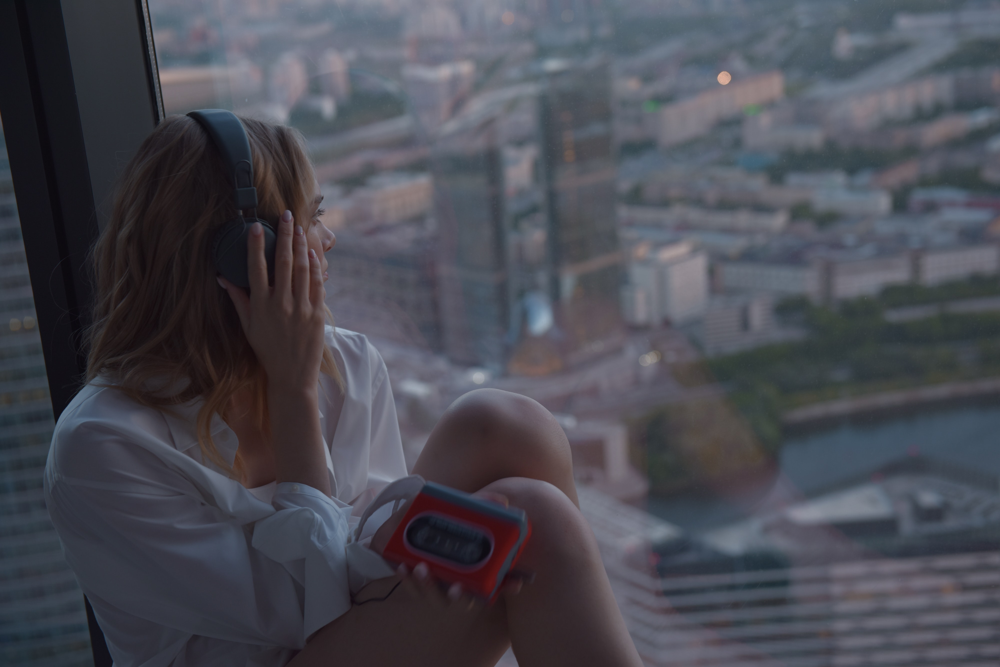
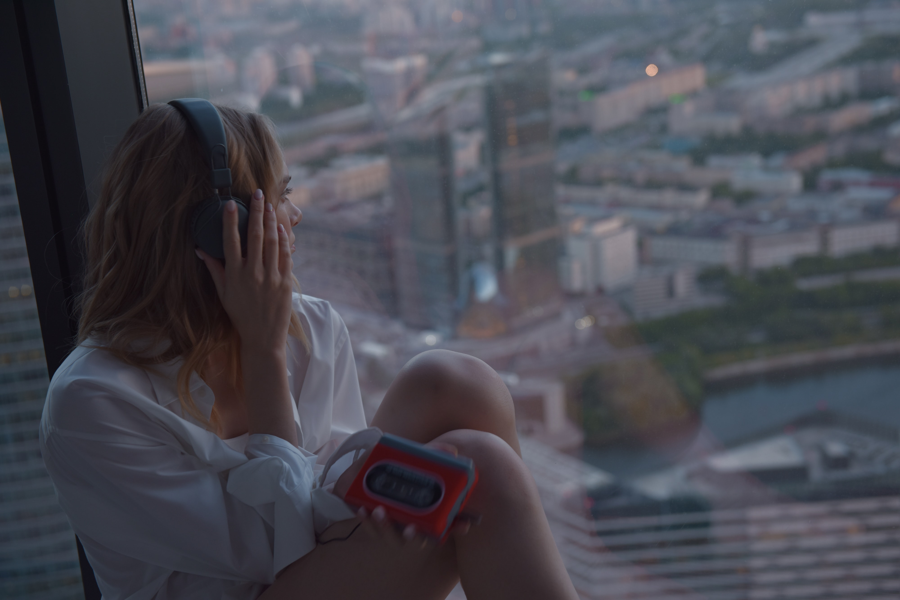

Hakkında

Ben Kimim?
Ben Aslıhan Yılmaz. Kocaeli'de doğup büyüdüm. Çekingen ve genel hali memnun briyimdir. Küçüklüğümden beri resim yapmayı severim. Küçükken çok fazla kıyafet çiziyordum, bu yüzden moda tasarım okumak istiyordum. Büyüdükçe ne kadar keyif alsam da vakit ayırmak çok zorlaştı. Lisede arkadaşlarımla voleybol oynmayı çok severdim. İzlemekten ve oynamaktan en keyif aldığım spor.
Yalnızken ise sıkılmam çok zor oluyor. Hemen hemen her şeyden keyif alıyorum. En çok da dizi izlemekten ve müzik dinlemekten.
 
